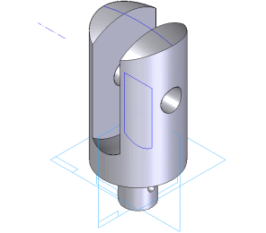

This tutorial demonstrates how Solid Edge Part features can become disconnected from a part model, and how to reconnect them. Solid Edge parts are fully associative; each feature of a part model is connected to at least one other feature. Sometimes, if you delete or edit a part feature, other features that were connected to it become disconnected from the part model. This tutorial gives you an example of this problem, and shows how to fix it.
This is an intermediate tutorial. You might find it easier to follow if you first complete the Introduction to Part Modeling tutorial.
Estimated time to complete: 15 minutes
